Mobile App Implementation
AR Environment
The app is written in C# on the Unity Android and iOS platform. It uses the popular ARCore and ARKit libraries for each platform respectively to interact with the camera environment on display.
The scene makes use of AR planes, both vertical and horizontal to map out the environment in the AR Viewport. Each plane is then judged on its walkability and enabled for ray-casting
The Pet
The app displays an anthropomorphic pet that can walk around the planes mapped by the AR Plane Manager object.
The Pet game object is composed of an Animator (in charge of controlling skeletal poses), a mesh/avatar (the 3D skinned mesh on display) and a Behaviour Script that allows the pet to walk around the AR viewport when in input is presented.
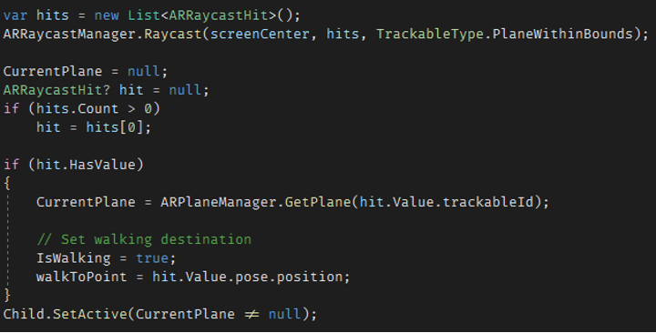
In addition to its input driven movement, the pet also tracks the user's location by turning to always face the camera.
Voice Command Functionality
Much like on the desktop version, the pet actively listens for voice commands using the phones microphone. Once a sentence is recorded, it is then transcribed into text using the IBM Cloud SDK's Speech-To-Text functionality. The text is scanned for available commands, a reply is selected, and an appropriate audio clip is generated by the SDK's Text-To-Speech module.
The UI
The user-interface is implemented as a collection of canvases and a UI manager. Each of the UI canvases has a main panel and a back button. There are canvases for the pets belonging to the user, settings, user information and accessories if available for the current pet.
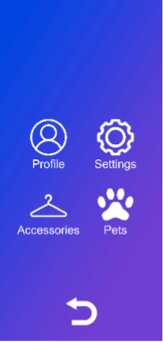
Web API (C#)
The API uses a .NET HttpClient to send and receive requests from the web server. 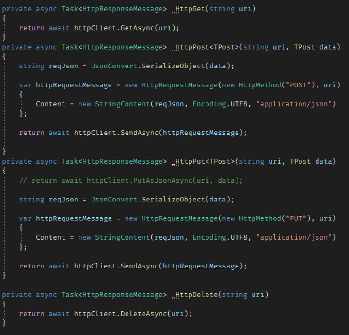
Each request and response are formatted from JSON strings to C# structs and vice versa using Newtonsoft.Json. Requests are sent asynchronously, and responses are received asynchronously.
Each response is serialized into an APIResponse<T> generic structure that contains a T type payload and error code if the request was unsuccessful. 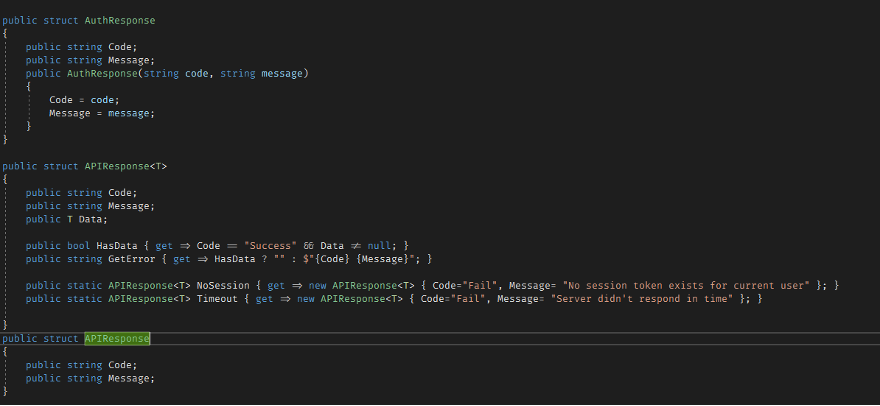
Functionality
The web api has commands for all the functionality available from the Web Server.
It has both regular and Async versions of each request.
The api stores session information into a Session object which is then used to request data from the server..
Documentation
Documentation of the API is available on its GitHub repository README.
Testing tools (Developer CLI)
Together with the API is also packaged a command line tool that support executing commands on the web server directly
It was mainly used for managing pet data during development sessions 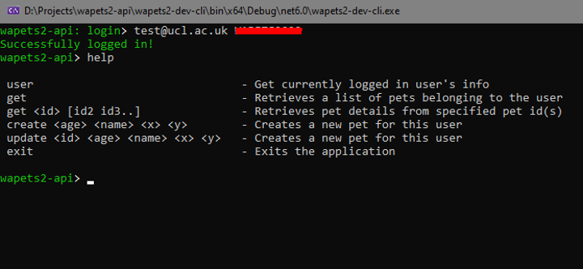
Desktop Assistant Implementation
Login
The login screen sends and receives data from the web server when the user enters their login credentials. The login fails if the post request does not contain the user login information; otherwise, the user account information is verified and the SceneManager.LoadScene() method is used to load the application/GUI. 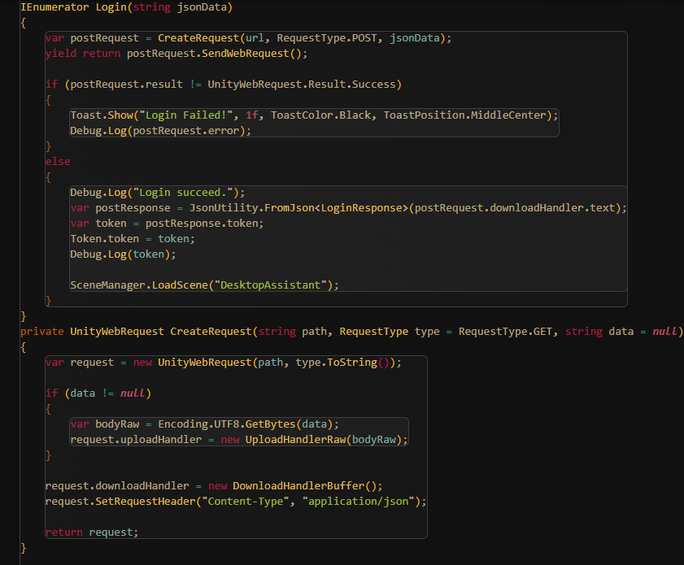
Speech-to-text input
The speech-to-text input works by the user’s microphone detecting the user’s speech input. This input is then sent by the STT (Speech to Text) manager to the Watson backend and retrieves the text string in response. The Assistant script then checks if the command is spoken and sends the text string to the chatbot. After receiving a response from the chatbot, the speech bubble shows up next to the pet. Meanwhile, the TTS (Text to Speech) sends the response text to the Watson backend, gets the audio clip in response to the user’s input, then plays the audio.
Chatbot
The chatbot is implemented using an open-source machine learning framework for automated text and voice-based communications software called Rasa. Rasa is a highly customisable, Python-based software that enables our project to interpret the input provided by the user in the form of speech-to-text and respond with the appropriate reply.
Voice Control
We implemented 2 types of voice commands in Unity.
The first are built-in Unity functions, like “play music” and “start timer”.
The second are external commands like “Open BBC”, “Search how to run”, etc. These commands can be customised by editing the configuration file under resources/configs folder. The app reads these commands from the config file and stores the commands in a dictionary.
Both methods use keyword detection. If the keyword is detected (after it is processed by IBM’s Watson Cloud SDK Speech-to-text function), the corresponding command is executed.
Desktop Gadgets
The desktop widgets include a music player with an autoscrolling bar, that is updated every frame by changing the x-y positions of the related GUI elements during each frame. The timer functions by calculating the time between the clicks on the start and stop buttons, while the real-time clock displays the time using Unity's Quaternion.Euler() methods to rotate the hour and minute hands. 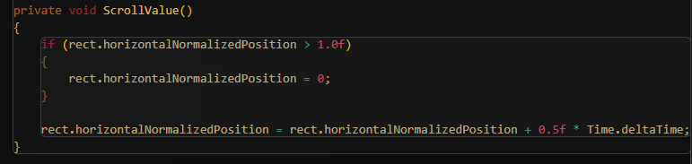
Desktop Pet
Our first implementation of the desktop pet was to have it look at the cursor. However, we scrapped this idea as the pet looking at the cursor was too weird and unnatural. We also tried changing the background as time-of-day changes – like stars during night, but we decided against it as its functionality was buggy and could cause some problems for people in different time zones. In our current implementation, the pet AI is essentially a state machine that reacts to different clicks. The OnDrag() method allows for the user to drag the pet across the screen, having the pet follow the mouse’s x-y coordinates on the screen plane to update the location of the virtual pet. The SwitchAnimation() method under the ReactToInteraction.cs script detects the input of the users mouse (left click, right click, scroll click or drag) to check whether the mouse is on the pet when it is clicked; if it is, then it redirectst the code to the appropriate pet interaction method and causes the pet to react accordingly. 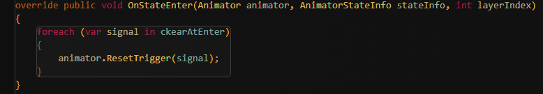
Some notes on Design Patterns
We used the Singleton pattern for the WatsonManager and GameManager because we want them to be globally accessible and to be instantiated only once – they will not be destroyed upon entering the AR mode.
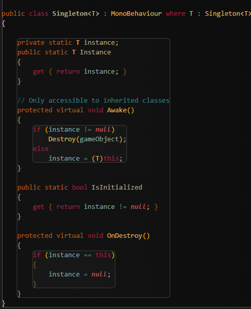We used the Observer pattern for the SpeechBubble and TextToSpeech. This way, the Assistant sends a notification after receiving a response from the chatbot. After observing it, the SpeechBubble shows up and starts a timer.
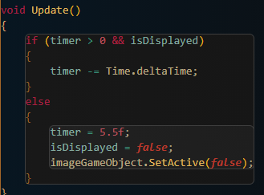
When the timer reaches 0, the SpeechBubble disappears. TextToSpeech sends the text string to the backend, retrieves an audio clip, and plays it.
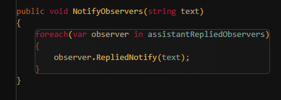 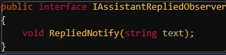
Web Server
Hosting
The website is hosted on DigitalOcean App Platform, due to its speed of setup and continuous integration ability
Every time a commit is pushed to the master branch of the git repository, the website is redeployed (with automatic rollback if there is an issue with the deploy)
There is also a PostgreSQL database managed by DigitalOcean
Web framework
The code for the web server is written in Python, using the Django web framework
This is due to the range of features included in Django (including the ORM, and automated admin panel) as well as the wealth of libraries available for both Python and Django which make developing common patterns much easier
The ORM is used to manage the tables that store users and pets, and stably migrate database state when changes are made
API
The API is written using djangorestframework which sits on top of Django’s view system, to provide a set of common classes to do common API operations
The ModelViewSet provides the ability to create, read, list, update, and delete records in a database table (with the ability to add custom filters, for example the PetViewSet only shows pets for the current user)
The Router then links various URLS (/api/pet/3/update etc.) to their relevant views within the ModelViewSet
There is a PetViewSet which provides full CRUD for the Pet model 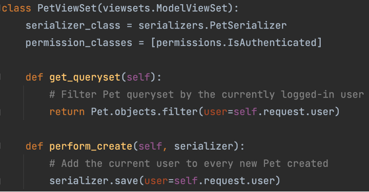
There is UserViewSet which just provides an endpoint for the currently logged in user to get information about their account (name, preferences etc.)
Authentication
Uses JSON Web Tokens (JWT) which is an open standard for sending encryption and signatures as JSON
A user sends a username and password to an API endpoint and, if they match a user account in the system, they are returned a JWT
This JWT contains which account the user is authenticated to, along with the expiry date (1 week after obtaining), and a signature generated using a key stored on the server which verifies the enclosed information
This token should be included with every API request as a bearer token in the Authorization header.
This allows the server to know that the user is authenticated to access the API, and specifically which account they are authenticated to (so that the correct data can be returned)
The underlying implementation of this signing algorithm is done by a python library call drf-jwt
Documentation
There is API documentation provided as a hosted webpage, alongside the API
This is achieved using a few pieces of open-source technology connected together
Swagger is a system to describe API’s using JSON, in order to make them indexable by automated systems
There is a related project called Swagger UI which can take an API description in Swagger and create very detailed API documentation, including example requests and responses
Lastly, there is a library called drf-yasg which generates a Swagger description of a djangorestframework API
Combining drf-yasg and Swagger UI, we were able to generate very usable API documentation, with all of the definitions coming from the same code that actually implements the API. There was some amount of difficulty changing the default functionality of both drf-yasg and Swagger UI, to customise the documentation a bit, but this is to be expected.